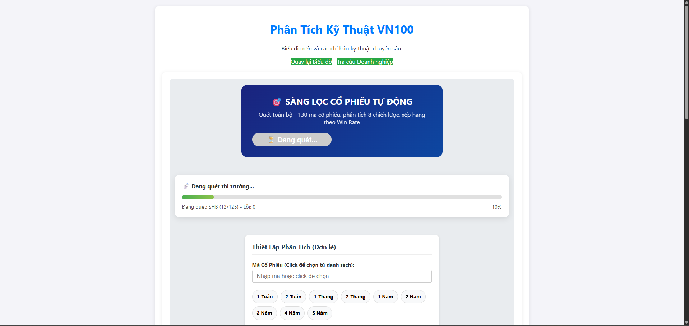
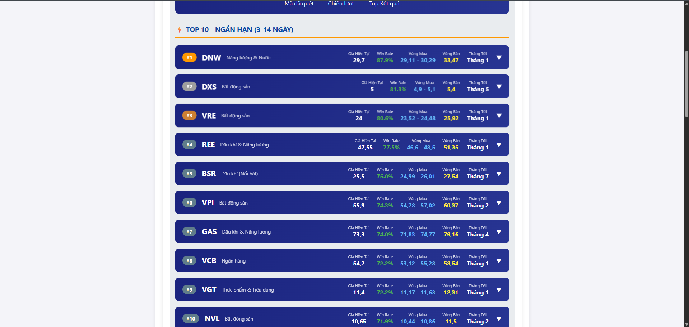
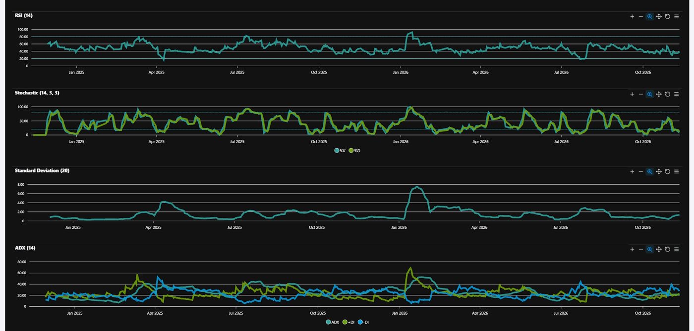
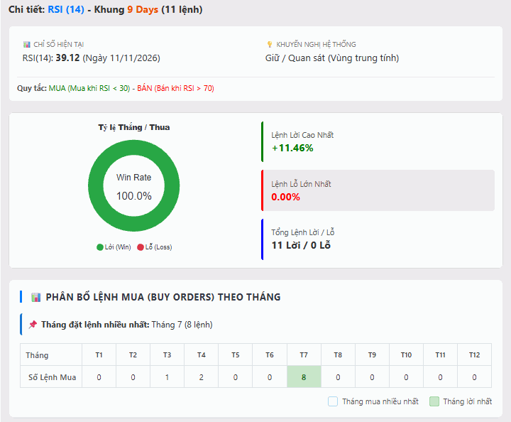

Sàng lọc Cổ phiếu Tự động
Quét tự động ~130 mã cổ phiếu qua 8 chiến lược định lượng, xếp hạng Top 10 mã ngắn hạn (3–14 ngày) có tỷ lệ thắng (Win Rate) cao nhất.
Kế hoạch Giao dịch & Quản trị Rủi ro
Tự động xác định vùng mua/bán, điểm chốt lời (TP), cắt lỗ (SL), tỷ lệ R:R và đề xuất chia tỷ trọng giải ngân an toàn theo 3 đợt.
Biểu đồ Kỹ thuật & Dữ liệu Real-time
Cập nhật bảng giá trực tiếp trong phiên cùng biểu đồ nến Nhật tích hợp Fibonacci, Ichimoku, Bollinger Bands, RSI, Stochastic và ADX.
Kiểm thử Chiến lược (Backtest)
So sánh hiệu suất các chỉ báo trên khung ngắn hạn và dài hạn, thống kê tỷ lệ thắng/thua, nhật ký lệnh và tháng giao dịch tốt nhất.

Kế hoạch hành động giao dịch tự động & Quản trị rủi ro (Nhấn để phóng to)

Quét tự động ~130 mã VN100
Top 10 Ngắn hạn (Win Rate)
Vùng Mua/Bán & R:R 1:3.6
 Giá Real-time & Tín hiệu Mua
Giá Real-time & Tín hiệu Mua
 Nến Nhật, Fibonacci & Ichimoku
Nến Nhật, Fibonacci & Ichimoku

RSI, Stochastic, StdDev & ADX Backtest Ngắn & Dài hạn
Backtest Ngắn & Dài hạn

Win Rate 100% & Chu kỳ tháng Hiệu suất tháng & Nhật ký lệnh
Hiệu suất tháng & Nhật ký lệnh